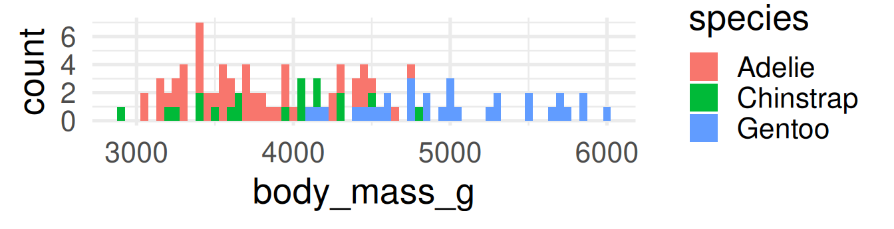
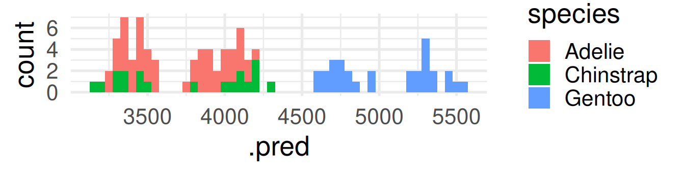
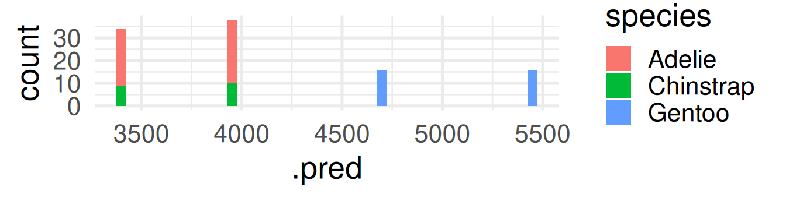

Loading required package: rpart
Attaching package: 'rpart'
The following object is masked from 'package:dials':
prune
library(openintro)
Loading required package: airports
Loading required package: cherryblossom
Loading required package: usdata
Attaching package: 'openintro'
The following object is masked from 'package:modeldata':
ames
library(palmerpenguins)
Attaching package: 'palmerpenguins'
The following object is masked from 'package:modeldata':
penguins
The following objects are masked from 'package:datasets':
penguins, penguins_raw
Background story: People providing an organ for donation sometimes seek the help of a special “medical consultant”. These consultants assist the patient in all aspects of the surgery, with the goal of reducing the possibility of complications during the medical procedure and recovery. Patients might choose a consultant based in part on the historical complication rate of the consultant’s clients.
. . .
Example track record: One consultant tried to attract patients by noting that the average complication rate for liver donor surgeries in the US is about 10%, but her clients have only had 3 complications in the 62 liver donor surgeries she has facilitated. She claims this is strong evidence that her work meaningfully contributes to reducing complications (and therefore she should be hired!).
# A tibble: 2 × 2
outcome n
<chr> <int>
1 complication 3
2 no complication 59
1.3 Parameter vs. statistic
A parameter for a hypothesis test is the “true” value of interest. We typically estimate the parameter using a sample statistic as a point estimate.
\(q\): true rate of complication, here 0.1 (10% complication rate in US)
\(\hat{q}\): rate of complication in the sample = \(\frac{3}{62}\) = 0.048 (This is the point estimate.)
1.4 Correlation vs. causation
Is it possible to infer the consultant’s claim using the data?
No. The claim is: There is a causal connection. However, the data are observational. For example, maybe patients who can afford a medical consultant can afford better medical care, which can also lead to a lower complication rate (for example).
. . .
What is possible?
While it is not possible to assess the causal claim, it is still possible to test for an association using these data. For this question we ask, could the low complication rate of \(\hat{q}\) = 0.048 be due to chance?
1.5 Two claims
Null hypothesis \(H_0\): “There is nothing going on”
Complication rate for this consultant is no different than the US average of 10%
Alternative hypothesis \(H_1\): “There is something going on”
Complication rate for this consultant is lower than the US average of 10%
1.6 Understand hypothesis testing as a court trial
Null hypothesis, \(H_0\): Defendant is innocent
Alternative hypothesis, \(H_A\): Defendant is guilty
Present the evidence: Collect data
Judge the evidence: “Could these data plausibly have happened by chance if the null hypothesis were true?”
Yes: Fail to reject \(H_0\)
No: Reject \(H_0\)
1.7 Hypothesis testing framework
Start with a null hypothesis, \(H_0\), that represents the status quo
Set an alternative hypothesis, \(H_A\), that represents the research question, i.e. what we are testing for
Conduct a hypothesis test under the assumption that the null hypothesis is true and calculate a p-value. Definition p-value:Probability of observed or more extreme outcome given that the null hypothesis is true.
if the test results suggest that the data do not provide convincing evidence for the alternative hypothesis, stick with the null hypothesis
if they do, then reject the null hypothesis in favor of the alternative
1.8 Setting the hypotheses
Which of the following is the correct set of hypotheses for the claim that the consultant has lower complication rates?
is correct.
Hypotheses are about the true rate of complication \(q\) not the observed ones \(\hat{q}\)
2 Simulation for Hypothesis Testing
2.1 Simulating the null distribution
Since \(H_0: q = 0.10\), we need to simulate a null distribution where the probability of success (complication) for each trial (patient) is 0.10.
How should we simulate the null distribution for this study using a bag of chips?
How many chips? For example 10 which makes 10% choices possible
How many colors? 2
What should colors represent? “complication”, “no complication”
How many draws? 62 as the data
With replacement or without replacement? With replacement
When sampling from the null distribution, what would be the expected proportion of “complications”? 0.1
2.2 Simulation!
set.seed(1234) # The seed is set for the sake of stable presentation outcomes.outcomes <-c("complication", "no complication")sim1 <-sample(outcomes, size =62, prob =c(0.1, 0.9), replace =TRUE)sim1
[1] "no complication" "no complication" "no complication" "no complication"
[5] "no complication" "no complication" "no complication" "no complication"
[9] "no complication" "no complication" "no complication" "no complication"
[13] "no complication" "complication" "no complication" "no complication"
[17] "no complication" "no complication" "no complication" "no complication"
[21] "no complication" "no complication" "no complication" "no complication"
[25] "no complication" "no complication" "no complication" "complication"
[29] "no complication" "no complication" "no complication" "no complication"
[33] "no complication" "no complication" "no complication" "no complication"
[37] "no complication" "no complication" "complication" "no complication"
[41] "no complication" "no complication" "no complication" "no complication"
[45] "no complication" "no complication" "no complication" "no complication"
[49] "no complication" "no complication" "no complication" "no complication"
[53] "no complication" "no complication" "no complication" "no complication"
[57] "no complication" "no complication" "no complication" "no complication"
[61] "no complication" "no complication"
sum(sim1 =="complication")/62
[1] 0.0483871
Oh OK, this was exactly the consultant’s rate. But maybe it was a rare event? Let us repeat it.
# A tibble: 62 × 1
outcome
<chr>
1 complication
2 complication
3 complication
4 no complication
5 no complication
6 no complication
7 no complication
8 no complication
9 no complication
10 no complication
# ℹ 52 more rows
set.seed(10)null_dist <- organ_donor |>specify(response = outcome, success ="complication") |>hypothesize(null ="point", p =c("complication"=0.10, "no complication"=0.90)) |>generate(reps =100, type ="draw") |>calculate(stat ="prop")null_dist
This is the fraction of simulations where complications was equal or below 0.0483871.
3.3 Significance level
A significance level\(\alpha\) is a threshold we make up to make our judgment about the plausibility of the null hypothesis being true given the observed data.
We often use \(\alpha = 0.05 = 5\%\) as the cutoff for whether the p-value is low enough that the data are unlikely to have come from the null model.
If p-value < \(\alpha\), reject \(H_0\) in favor of \(H_A\): The data provide convincing evidence for the alternative hypothesis.
If p-value > \(\alpha\), fail to reject \(H_0\) in favor of \(H_A\): The data do not provide convincing evidence for the alternative hypothesis.
What is the conclusion of the hypothesis test?
Since the p-value is greater than the significance level, we fail to reject the null hypothesis. These data do not provide convincing evidence that this consultant incurs a lower complication rate than the 10% overall US complication rate.
3.4 100 simulations is not sufficient
We simulate 15,000 times to get an accurate distribution.
null_dist <- organ_donor |>specify(response = outcome, success ="complication") |>hypothesize(null ="point", p =c("complication"=0.10, "no complication"=0.90)) |>generate(reps =15000, type ="simulate") |>calculate(stat ="prop")
The `"simulate"` generation type has been renamed to `"draw"`. Use `type =
"draw"` instead to quiet this message.
the probability that the studied hypothesis is true
the probability that the data were produced by random chance alone
the size of an effect
the “importance of a result” or “evidence regarding a model or hypothesis” (it is only against the null hypothesis).
. . .
Correct:
The p-value is the probability of obtaining test results at least as extreme as the result actually observed, under the assumption that the null hypothesis is correct.
p-values and significance tests, when properly applied and interpreted, increase the rigor of the conclusions drawn from data.4
4 Classification: Compare logistic regression and decision tree
4.1 Purpose of the section
Go again through the modeling workflow (with tidymodels) and see that large parts are identical
Look again at the coefficients of a logistic regression model
Learn the basic idea of a decision tree (you will not learn the details here)
Do the classification with both models and compare the confusion matrices
4.2 Specify recipe and models
For both logistic regression and decision tree:
peng_recipe <-recipe(sex ~ ., data = penguins) |>step_rm(year)
. . .
We specify a recipe to predict sex with all available variables in penguins
In typical model development, more pre-processing steps are done.
. . .
Logistic Regression
peng_logreg <-logistic_reg() |>set_engine("glm")
peng_logreg specifies to fit with glm (generalized linear model from base R)
What do the categorical predictors tell us? Which are signigficant?
What do the numerical predictors tell us? Which are signigficant?
Why is the coefficient for body_mass_g so small, but highly significant?
. . .
Categorical predictors: We have 3 species, 3 island. So, we see 4 new variables, 2 for species and 2 for island (the third is the reference category). Species are significant (p < 0.05), but islands not.
Numerical predictors:flipper_length_mm is insignificant, though its coefficient is larger than for body_mass_g. Reason: values of body_mass_g are larger than those of flipper_length_mm. Body mass differs by much more grams than flipper length differs by millimeters.
The first three rules would predict female for all observations
The last five rules would predict male for all observations
The order of male and female is because sex is a factor with the first level female and the second level male. The probabilities in front of the rule-text are for the second level: male.
Truth
Prediction female male
female 43 12
male 5 39
The logistic regression has more correct predictions.
Warning: The function conf_mat (from yardstick of tidymodels) shows the transposed confusion matrix compared with Wikipedia:Confusion Matrix. In conf_mat, the true conditions are in columns. The wikipedia convention is that columns are the predicted conditions.
5 Regression: Compare linear regression and decision tree
5.1 Purpose of the section
Go again through the modeling workflow (with tidymodels) and see that large parts are identical
Look again at the coefficients of a linear model
See how the decision tree looks like for a regression problem
Compare the two most common performance measures for regression models: Root Mean Squared Error (RMSE) and R-squared
5.2 Specify recipe and models
We specify a recipe to predict body_mass_g with all available variables in penguins and put it in a workflow
Typically, more pre-processing steps are specified here, but we are mostly fine
peng_recipe2 <-recipe(body_mass_g ~ ., data = penguins) |>step_rm(year)peng_workflow2 <-workflow() |>add_recipe(peng_recipe2)
We can re-use the split and the training and test set.
..y
3418 when species is Adelie or Chinstrap & sex is female
3961 when species is Adelie or Chinstrap & sex is male
4693 when species is Gentoo & sex is female
5474 when species is Gentoo & sex is male
For each terminal node a certain value is predicted (the mean of the remaining penguins)
peng_regtree_pred <-predict(peng_regtree_fit, peng_test) |>bind_cols(peng_test)peng_regtree_pred |>select(.pred, body_mass_g, species, sex) |>slice(10*(1:10)) # show same selected rows
# A tibble: 10 × 4
.pred body_mass_g species sex
<dbl> <int> <fct> <fct>
1 3418 3700 Adelie female
2 3961. 3950 Adelie male
3 3961. 3800 Adelie male
4 3961. 3875 Adelie male
5 3418 3400 Adelie female
6 4693. 4150 Gentoo female
7 4693. 4200 Gentoo female
8 4693. 4850 Gentoo female
9 3961. 4150 Chinstrap male
10 3961. 4050 Chinstrap male
5.8 Regression Performance Evaluation
R-squared: Percentage of variability in body_mass_g explained by the model
Linear Regression
rsq(peng_linreg_pred, truth = body_mass_g, estimate = .pred)
# A tibble: 1 × 3
.metric .estimator .estimate
<chr> <chr> <dbl>
1 rsq standard 0.861
Decision Tree
rsq(peng_regtree_pred, truth = body_mass_g, estimate = .pred)
# A tibble: 1 × 3
.metric .estimator .estimate
<chr> <chr> <dbl>
1 rsq standard 0.806
Root Mean Squared Error (RMSE):\(\text{RMSE} = \sqrt{\frac{1}{n}\sum_{i = 1}^n (y_i - \hat{y}_i)^2}\)
where \(\hat{y}_i\) is the predicted value and \(y_i\) the true value. (The name RMSE is descriptive.)
rmse(peng_linreg_pred, truth = body_mass_g, estimate = .pred)
# A tibble: 1 × 3
.metric .estimator .estimate
<chr> <chr> <dbl>
1 rmse standard 290.
rmse(peng_regtree_pred, truth = body_mass_g, estimate = .pred)
# A tibble: 1 × 3
.metric .estimator .estimate
<chr> <chr> <dbl>
1 rmse standard 337.
Which model is better in prediction? Linear regression. The R-squared is higher.
5.9 What RMSE is better?
. . .
Lower. The lower the error, the better the model’s prediction.
It is the other way round than R-squared! Do not confuse them.
. . .
Notes:
The common method to fit a linear model is the ordinary least squares (OLS) method
That means the fitted parameters should deliver the lowest possible sum of squared errors (SSE) between predicted and observed values.
Minimizing the sum of squared errors (SSE) is identical to minimizing the mean of squared errors (MSE) because it only adds the factor \(1/n\).
Minimizing the mean of squared errors (MSE) is identical to minimizing the root mean of squared errors (RMSE) because the square root is strictly monotone function.
Conclusion: RMSE can be seen as a definition of the OLS optimization goal.
5.10 Interpreting RMSE
In contrast to R-squared, RMSE can only be interpreted with knowledge about the range and of the response variable! It also has the same unit (grams for body_mass_g).
peng_test |>ggplot(aes(x=body_mass_g, fill = species)) +geom_histogram(binwidth =50) +theme_minimal(base_size =20)
Warning: Removed 2 rows containing non-finite outside the scale range
(`stat_bin()`).

peng_linreg_pred |>ggplot(aes(x=.pred, fill = species)) +geom_histogram(binwidth =50) +theme_minimal(base_size =20)
Warning: Removed 5 rows containing non-finite outside the scale range
(`stat_bin()`).

peng_regtree_pred |>ggplot(aes(x=.pred, fill = species)) +geom_histogram(binwidth =50) +theme_minimal(base_size =20)

The RMSE shows many grams predicted values deviate from the true value on average. (Taking the squaring of differences and root of the average into account.)
# A tibble: 2 × 3
.metric .estimator .estimate
<chr> <chr> <dbl>
1 rmse standard 309.
2 rsq standard 0.857
Where is the prediction better? (Lower RMSE, higher R-squared)
. . .
Performance is better for training data (compare values to testing data of the same model). Why? It was used to fit. The model is optimized to predict the training data.
6.2 Make a deeper tree
In decision_tree() we can set the maximal depth of the tree to 30.
The trees we had before were also automatically pruned by sensible defaults.
By setting the cost complexity parameter to -1 we avoid pruning.6
We already had the difference between variable-based and agent-based models in earlier lectures.
But even in the variable-based model setting of statistical learning, the term model can be more or less abstract:
Very general: \(Y = f(X_1, \dots, X_m) + \varepsilon\) where \(Y\) is the response variable and \(X_i\) are features which we put in our model: the abstract and unknown function \(f\). \(\varepsilon\) is the error which we can never explain usually do not know.
More specific: The model\(f\) could already be of a specific type, like logistic regression, a decision tree or other functional forms. As this need not be the real function we may call it assumed model\(\hat f\) For example a linear model \(\hat f(X_1, \dots, X_m) = \beta_0 + \beta_1 X_1 + \dots + \beta_m X_m + \varepsilon\). Now, the model has specified parameters which values are unknown.
7.2 More specific: Fitted model
Fitted model: When we have a data set with values for \(Y, X_1, \dots, X_m\) we can fit values for the parameters \(\hat\beta_0, \dots, \hat\beta_m\) to the data. This is the fitted model\(\hat f\). This is called parameter estimation: We estimate \(\hat\beta_0, \dots, \hat\beta_m\) with the hope that they match the real values \(\beta_0, \dots, \beta_m\) and that the linear model \(\hat f\) matches the real function \(f\).
Now we could specify further to fit a specific parameterized model with a specific algorithm, and a specific set of hyperparameters, and maybe more …
Sometimes model means only a certain aspect of all these, for example the formula like sex ~ bill_length_mm + bill_depth_mm + flipper_length_mm + body_mass_g + species + island
. . .
Take away: “Model” can mean things with very different granularity. That is OK because they are all related and all fit the definition of being a simplified representation of reality.
Be prepared to specify what you mean when you are talking about a model.
Footnotes
Of course, you can also do it in your own way without packages.↩︎
This a one-sided hypothesis test because we are looking for extremely lower rates not also extremely higher rates. We do one-sided test if we know the direction of interest, here “low” and “lower” rates.↩︎
From the American Statistical Association (ASA) 2016↩︎
From the American Statistical Association (ASA) 2019↩︎
rpart is a package for recursive partitioning and regression trees. Different decision tree procedures are subsumed as classification and regression trees (CART)↩︎
The details of this go beyond the scope of this course.↩︎